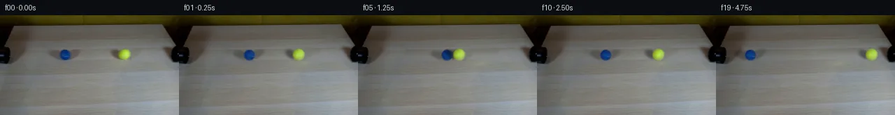

![首帧]()

Round 00
2026-11-04T22:13:25.309224+00:00像素候选变化代码 +203/−0inspection 更新
pixels 630237f48cd2700f · code 0e4992b63298583b
查看本轮 generate.py 真实 diff
--- previous/generate.py
+++ current/generate.py
@@ -0,0 +1,203 @@
+"""Local source-pixel continuation, analytic equal-mass rolling collision.
+
+No model, external scene, renderer, or additional input is used.
+"""
+from pathlib import Path
+import json
+import numpy as np
+from PIL import Image, ImageDraw
+from scipy.ndimage import gaussian_filter, map_coordinates
+import cv2
+from artifact_io import save
+
+ROOT = Path(__file__).resolve().parent
+TMP = ROOT / '.tmp'
+TMP.mkdir(exist_ok=True)
+H, W = 144, 256
+source = np.array(Image.open(ROOT / 'first_frame.png').convert('RGB'))
+original = source.astype(np.float64)
+Y, X = np.mgrid[:H, :W]
+balls = [dict(name='blue', cx=93.35, cy=57.05, r=7.75),
+ dict(name='yellow', cx=177.70, cy=56.45, r=8.30)]
+
+# Small background holes cover both original balls and their table shadows.
+# Work within the same horizontal wooden plank; donor pixels carry its grain.
+hole = np.zeros((H, W), np.uint8)
+for cx, cy, rx, ry in [(95, 56, 27, 12), (173, 55, 25, 12)]:
+ hole[((X-cx)/rx)**2 + ((Y-cy)/ry)**2 < 1] = 255
+# An initial harmonic-style interpolation supplies low-frequency table values.
+inpainted = cv2.inpaint(source, hole, 5, cv2.INPAINT_TELEA).astype(np.float64)
+# Same-row, local clean wood provides the horizontal grain texture. Linear
+# interpolation across each hole avoids telea's radial streaks and is mixed
+# with its edge-aware result.
+background = original.copy()
+for y in range(H):
+ xs = np.flatnonzero(hole[y])
+ if not len(xs):
+ continue
+ splits = np.split(xs, np.flatnonzero(np.diff(xs)>1)+1)
+ for run in splits:
+ a, b = int(run[0]), int(run[-1])
+ left = np.median(original[y, max(0,a-4):a], axis=0)
+ right = np.median(original[y, b+1:min(W,b+5)], axis=0)
+ linear = left[None,:] + (right-left)[None,:]*np.linspace(0,1,b-a+1)[:,None]
+ donor_x = 125 + (np.arange(b-a+1) % 22)
+ donor = original[y, donor_x]
+ grain = donor - gaussian_filter(original, sigma=(0, 2.0, 0))[y, donor_x]
+ candidate = .75*linear + .25*inpainted[y,a:b+1] + .50*grain
+ background[y,a:b+1] = candidate
+# A feathered reconstruction boundary is invisible in the static table.
+soft_hole = gaussian_filter((hole>0).astype(float), .9)
+soft_hole[hole>0] = 1
+background = original*(1-soft_hole[...,None]) + background*soft_hole[...,None]
+Image.fromarray(np.uint8(np.clip(background,0,255))).save(TMP/'background.png')
+
+# Extract photographic foreground and multiplicative table-shadow sprites.
+# The former retains measured lighting; only its material detail rotates.
+for ball in balls:
+ cx, cy, r = ball['cx'], ball['cy'], ball['r']
+ lx, ly = np.meshgrid(np.arange(-31,32), np.arange(-18,19))
+ coords = [cy+ly, cx+lx]
+ rgb = np.stack([map_coordinates(original[:,:,c], coords, order=1, mode='nearest') for c in range(3)], axis=-1)
+ bg = np.stack([map_coordinates(background[:,:,c], coords, order=1, mode='nearest') for c in range(3)], axis=-1)
+ distance = np.sqrt(lx*lx + ly*ly)
+ # Optical edge softness is measured from the out-of-focus source balls.
+ alpha = np.clip((r+.9-distance)/1.8,0,1)
+ alpha = gaussian_filter(alpha,.40)
+ alpha[distance>r+2.3] = 0
+ # Recover the broad cast shadow outside the colored sphere. The obscured
+ # part under the sphere is smoothly interpolated, not painted as a mark.
+ ratio = np.clip(np.mean(rgb / np.maximum(bg,1), axis=2), .35, 1.04)
+ object_region = (distance < r+1.7).astype(np.uint8)*255
+ ratio_u8 = np.uint8(np.clip(ratio,0,1)*255)
+ filled = cv2.inpaint(ratio_u8, object_region, 3, cv2.INPAINT_TELEA)/255.0
+ darkness = np.clip(1-filled,0,.42)
+ darkness = gaussian_filter(darkness, .8)
+ taper = np.clip((30-np.abs(lx))/5,0,1)*np.clip((17-np.abs(ly))/4,0,1)
+ darkness *= taper
+ # The table contact patch is kept small and beneath the apparent sphere.
+ contact = .13*np.exp(-.5*((lx/(r*.65))**2+((ly-(r-1.8))/1.65)**2))
+ darkness = np.maximum(darkness,contact)
+ shadow_bg = bg*(1-darkness[...,None])
+ foreground = (rgb - (1-alpha[...,None])*shadow_bg)/np.maximum(alpha[...,None],.025)
+ # Extrapolate edge colors from the sphere interior before interpolation.
+ inside = distance < r-1.4
+ for c in range(3):
+ channel = np.uint8(np.clip(foreground[:,:,c],0,255))
+ padded = cv2.inpaint(channel, (~inside).astype(np.uint8)*255, 3, cv2.INPAINT_TELEA)
… diff truncated; 116 more lines …